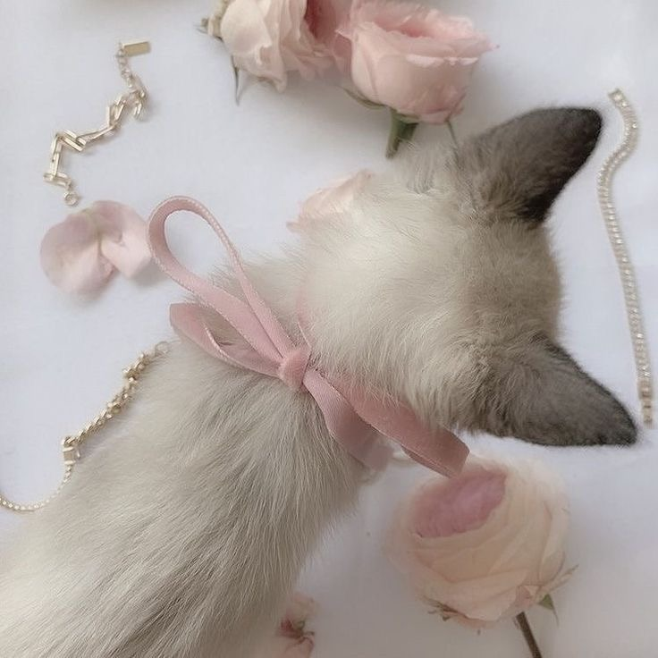

beabadoobee ๋࣭ ⭑

Beatrice Kristi Ilejay Laus (Iloílo, 3 de junho de 2000), conhecida pelo nome artístico Beabadoobee, é uma cantora e compositora filipina-britânica. Kristi foi indicada ao Rising Star Award no Brit Awards de 2020 e foi prevista como um ato inovador de 2020 em uma pesquisa anual da BBC de críticos de música, a Sound of 2020.
Laus nasceu em Iloílo, nas Filipinas em 3 de junho de 2000 e se mudou com seus pais para Londres quando tinha apenas 3 anos. Se formou até seu décimo terceiro ano na Sacred Heart High School e o completou na Hammersmith Academy.
beatopia ִֶָ𓂃 ࣪ ִֶָ🐇་༘࿐
